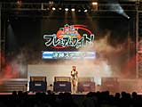
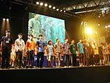
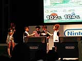
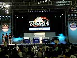

 『大乱闘スマッシュブラザーズDX』のベストプレイヤーを決める大会が開催! 会場にいるファンなら誰でも参加が可能なこの大会ですが、すでに終了した予選会を通過した強者だけが戦う、決勝ステージの模様をレポートしましょう!
|
| ●準々決勝 |
 予選会を通過した32名の強者が、4人ずつ8グループに分かれ、4人対戦が行われました。ルールは制限時間2分のタイム制バトル。時間内に決着がつかず、サドンデスに突入するグループもあるなか、プレイヤーはここでいきなり8人にしぼられました。
|
| ●準決勝 |
準々決勝を勝ち抜いた8人が、再び4人ずつ2グループに分かれて4人対戦。ルールは準々決勝と同じです。これに勝利した１名ずつが、ついに決勝進出となります。ここで、司会のあさりどご推薦の及川くんという凄腕プレイヤーが、サドンデスの末に敗れてしまうという一幕も。見事決勝にコマを進めたのは、鈴木雄太くんと、室伏康人くん。同じ16歳でした。
|
| ●場外乱闘？ |
 ここで決勝の前座として、本人たちの希望により、あさりど2人によるコイン制バトルが強引に行われることに。堀口氏はアイスクライマー、川本氏はピーチ姫を選びバトル開始! 勝者は川本氏。コイン差8枚という接戦でした。
|
| ●決勝 |
ついにスマブラのベストプレイヤーを決める戦いが始まります。「勝ちます!」という鈴木くんがカービィを選び、「(優勝する)自信はあります」という室伏くんがマリオを選び、ストック制バトルのルールで、ついに決勝の火蓋が切って落とされました。2人の実力は伯仲! カービィ、マリオ、と交互に1つずつストックが減っていく接戦のなか、見事優勝に輝いたのは、マリオの室伏くん! 彼には優勝賞品として、ゲームキューブ本体と『大乱闘スマッシュブラザーズDX』が贈られました。おめでとうございます!
・ 優勝 室伏康人くん(16歳) ・ 準優勝 鈴木雄太くん(16歳)
|
|

|